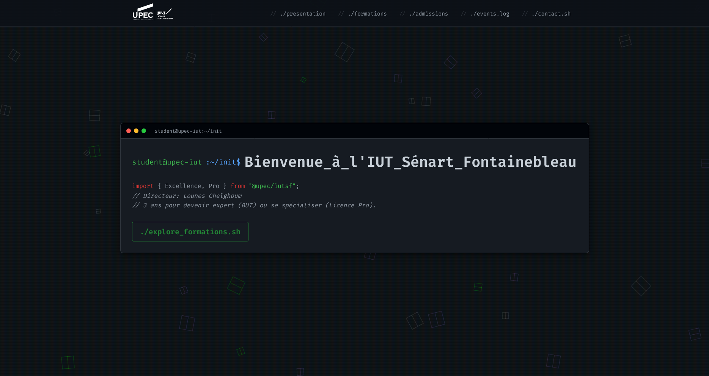

Landing Page de l'IUT Sénart Fontainebleau
Un défi de création explorant la façon de réinventer les portails universitaires pour les futurs étudiants. Ce concept de landing page pour l'IUT de Sénart Fontainebleau (UPEC) restructure l'information académique en une expérience web lisible, percutante et responsive.

01 Contexte & Vision Créative
Les sites de l'enseignement supérieur souffrent fréquemment de surcharge cognitive : menus imbriqués, blocs de texte denses et cheminements complexes qui masquent les informations décisives (filières, modalités d'admission, vie étudiante).
L'objectif de cet atelier était d'imaginer et concevoir une landing page percutante pour l' IUT de Sénart Fontainebleau, offrant une clarté instantanée pour les lycéens, étudiants et partenaires entreprises.
02 Stratégie de Design & Grilles CSS
La mise en page a été construite selon le principe de divulgation progressive — mettre en avant les priorités immédiates via des cartes modulaires claires et une typographie audacieuse :
Hiérarchie Centrée Étudiant
Organisation claire des départements et formations BUT avec accès direct aux conditions d'admission.
Grilles CSS Dynamiques
Utilisation poussée de CSS Grid avec pistes fractionnaires (fr) et fonctions clamp() pour s'adapter à toutes les largeurs d'écran.
Lisibilité à Fort Contraste
Échelle typographique soignée garantissant un confort de lecture optimal sur mobile comme sur moniteur large.
ADN Institutionnel Modernisé
Harmonisation de la charte UPEC avec des touches graphiques contemporaines et des bordures nettes.
03 Intégration Technique Frontend
Le design a été transcrit en HTML5 sémantique et CSS3 moderne sans recourir à des bibliothèques lourdes :
04 Fonctionnalités & Résultats Clés
- Navigation Simplifiée par Filière Accès rapide aux parcours MMI, GEA, TC et autres départements de l'IUT.
- Grille Adaptative Fluide Réorganisation fluide des colonnes sur mobile sans défilement horizontal parasite.
- Esthétique Équilibrée Un design combinant sérieux universitaire et fraîcheur visuelle.
05 Technologies Utilisées
- HTML5 Sémantique
- CSS3 Grid & Flexbox
- Prototypage Figma
- Design UI/UX
- Hébergement Alwaysdata
- Design Responsive